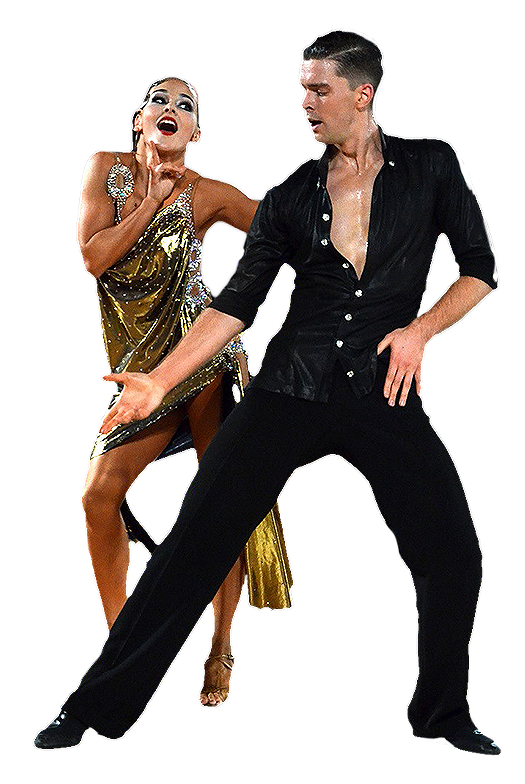
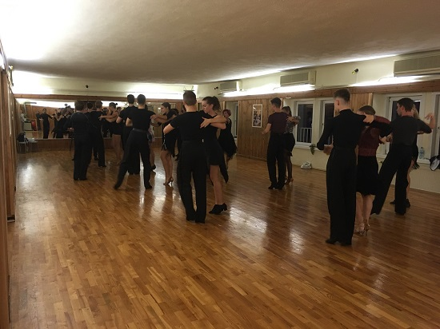
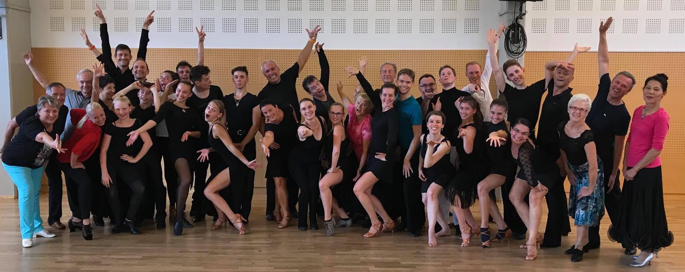
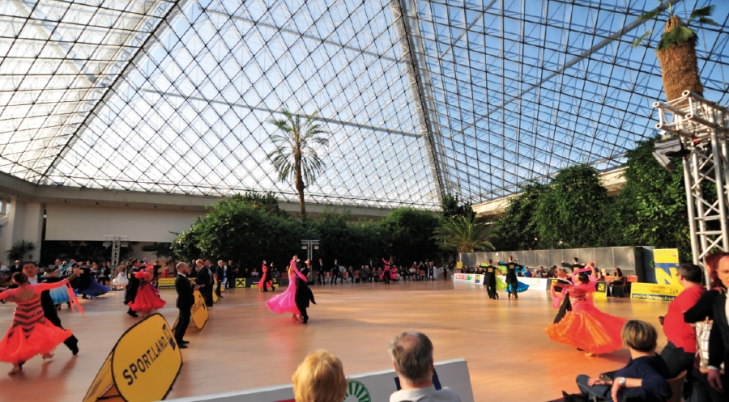
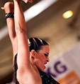

UTSC Forum Wien

Du möchtest dein Tanzen weiterentwickeln? Haltung, Technik und Führung lernen? Bei Wettkämpfen und Turnieren mitmachen? Dann bist du richtig!
Komm vorbei! Gruppentraining für Hobbytänzer und Turnieranfänger – jeden Dienstag von 19:00 bis 20:30 Uhr. Du kannst zwei Wochen lang kostenlos schnuppern!
Unsere Gruppentrainings
Anfängertraining
Fortgeschrittenentraining Standard
Latein Damen-Solo
Unser Angebot

Für Beginner
Das Anfängertraining für Tanzsport richtet sich an alle Paare, die ihr tänzerisches Können erweitern möchten:
- jeden Dienstag, von 19:00 bis 20:30 Uhr (ausgenommen Schulferien)
- wöchentlich abwechselnd Standard und Latein
- für Tanzschulpaare ab Gold-Kurs
- dient als Basis für Breitensport bzw. Einzeltraining zum Turniertanz
- alle zehn Tänze – mit jeweils einer eigenen Choreographie
- geleitete Übungsstunden am Freitag zur Wiederholung der im Gruppentraining erarbeiteten Choreographien

Für Fortgeschrittene
Betreuung durch nationale und internationale Spitzentrainer
- Privatstunden bei nationalen und internationalen Spitzentrainern
- Startberechtigung bei Tanzturnieren im In- und Ausland
- ständige Trainingshilfe
- Durchführung von Turnieren
- Rückhalt in Österreichs größtem Dachverband, der Sportunion

Alljährliche Veranstaltungen
Der UTSC Forum Wien führt auch eigene Veranstaltungen durch
- Ausrichtung eigener Turniere
- Sommerheuriger
- Weihnachtsfeier
- Sommertrainingslager
- Trainingstage im Winter
Dancing 4 Kids
- Hast du Spaß an Bewegung zur Musik?
- Möchtest du andere mit deinen Moves beeindrucken?
- Komm vorbei zum Schnuppertraining!
- Die ersten beiden Stunden sind gratis!
Mindestalter: 6 Jahre
Unsere Trainer:innen
Ingrid Fussek
Clubtrainerin Latein
WDSF Wertungsrichterin (A-Lizenz)
Präsidentin des UTSC Forum Wien
Ludwig Wieshofer
Clubtrainer Standard
WDSF Wertungsrichter (A-Lizenz)
1. Vizepräsident des ÖTSV
Turnierwart
Gustavs Ernests Aräjs
Trainer Latein
Stefan Herzog
Trainer Latein
Wertungsrichter
Vladimir Slon
Trainer Standard & Latein
Wertungsrichter

Cornelia Kreuter
Trainerin Latein
Natascha Welzel
Trainerin Standard
Wolfgang Stamm
Trainer Latein
Wertungsrichter
Bleib in Kontakt
Aktuelle Termine, Turniere und Neuigkeiten findest du auf unserer Facebook-Seite.
UTSC Forum Wien auf FacebookAnfahrt & Kontakt
Kontakt
UTSC Forum WienMariahilfer-Strasse 115, im Hof
1060 Wien
Telefon: +43 664 210 31 61
E-Mail: cu@forumwien.at Kostenlos schnuppern